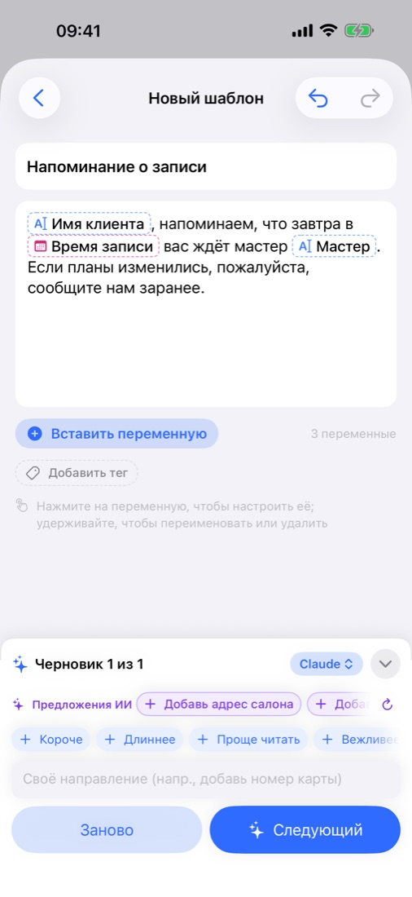
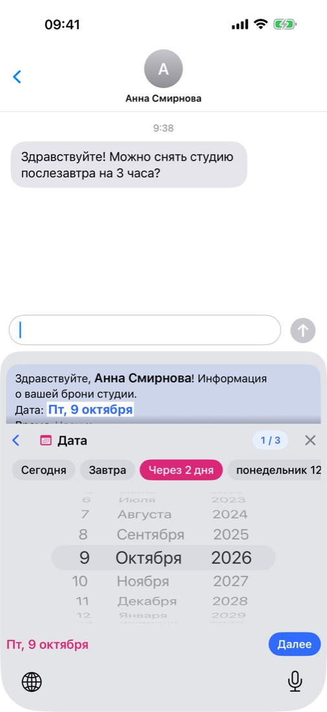
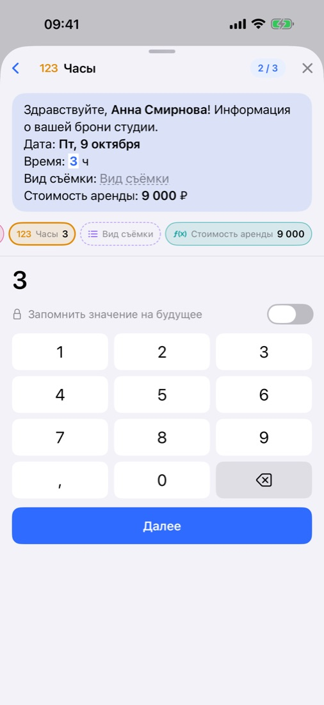
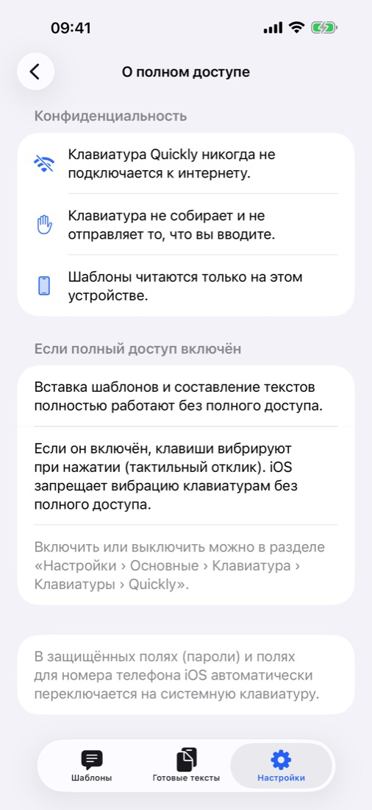

Текст напишет ИИ.
Вы заполните только то, что меняется.
Напишите одну строку — ИИ составит сообщение и оставит пустыми места, которые каждый раз меняются: имя, дату, сумму. При отправке заполните только их на клавиатуре Quickly, в любом приложении.
Скоро в App StoreБесплатно · Без рекламы · iOS 18 и новее · iPhone · iPad

Напишите, заполните, отправьте.



Всё нужное уже внутри.
Опишите ситуацию одной строкой или вставьте сообщение, которое уже отправляете, — вернётся текст, где всё изменяемое стало переменными. Доведите его кнопками «Короче» и «Вежливее».
Apple Intelligence прямо на устройстве и бесплатно, привычное приложение ChatGPT, Claude или Gemini или собственный API-ключ. Или пишите сами, без ИИ.
В «Сообщениях», почте или мессенджере выберите шаблон и заполните значения. А печатать можно как обычно — на 11 языках.
«Завтра» или «эта суббота» в одно касание, суммы со знаком валюты и формулы, которые сами считают итог.
Каждое заполненное сообщение сохраняется в «Готовых текстах». Разделяйте тегами и ищите по названию и тексту.
Шаблоны, теги и готовые тексты синхронизируются между устройствами с одной учётной записью iCloud. Резервную копию можно экспортировать. Светлое и тёмное оформление.
Они хранятся только на вашем устройстве и в вашем собственном iCloud, где их не видит даже разработчик. Без регистрации, без рекламы и отслеживания, а клавиатура никогда не выходит в интернет — Конфиденциальность